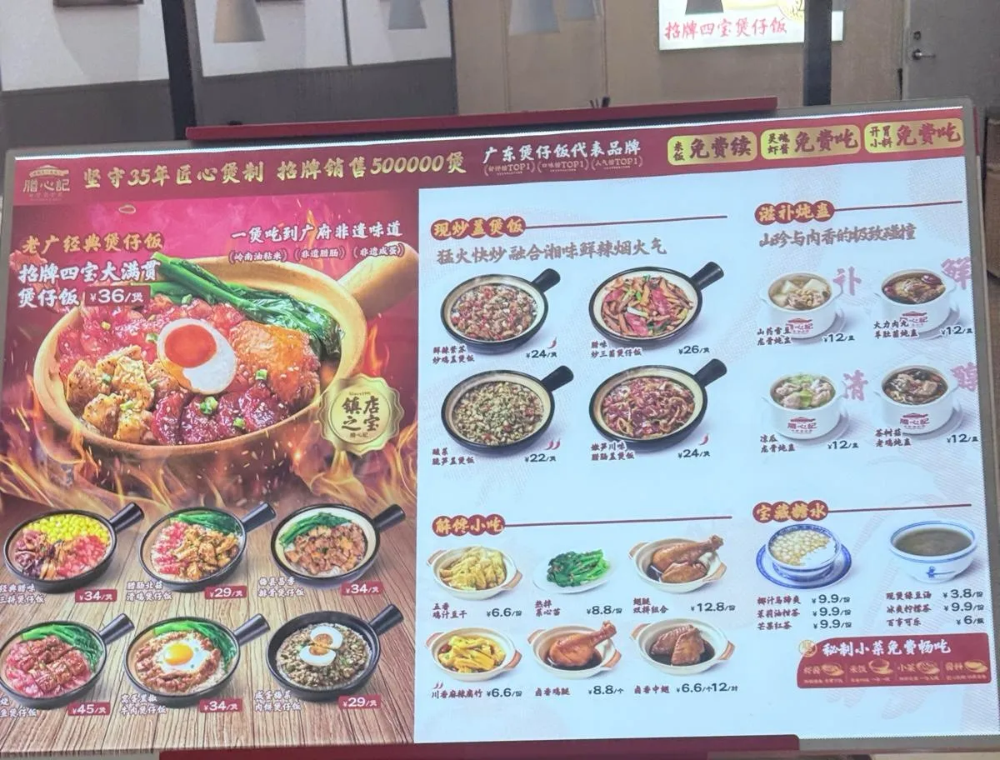
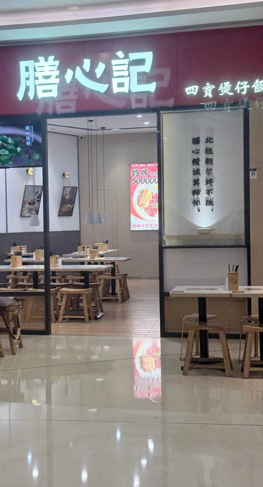

膳心記四寶煲仔飯（沙井西薈城店）：團購價唔等於門市價
深圳沙井西薈城一間廣式煲仔飯連鎖，我用團購券食咗招牌四寶大滿貫煲仔飯，實付 ¥30.6，自費，冇任何招待。一句總結：及格，但可以更好。另外呢篇順便講一件對北上食飯好實用嘅事——團購價唔等於門市價，而且兩者嘅差距通常細過你以為。
⚠️ 認清楚係邊間分店。呢篇講嘅係沙井西薈城店。我張團購券嘅「適用門店」顯示嘅係大運雙子座店——同沙井相距成個深圳。呢兩樣係唔同嘢：券嘅適用門店列表講嘅係「呢張券喺邊度用得」，唔係「你喺邊度用咗」。如果你照住券上面嗰個地址去，會去錯區。下面嗰條地址嚟自沙井西薈城店本身嘅商戶頁，唔係嚟自張券。
價錢同出品呢啲嘢會變，所以佢哋抽咗出嚟獨立標明到訪日期 —— 實食紀錄呢個分區嘅硬規則之一。正文只留唔會變嗰部分。
團購價唔等於門市價
呢個係本篇最有用嗰部分，所以擺喺最前。

兩個價，擺埋一齊睇
我實付：
門市價目牌：
三個數：門市 ¥36、團購原價 ¥35.9、實付 ¥30.6。
睇清楚：團購「原價」¥35.9 同門市價 ¥36 基本上係同一個數。換句話講，單買團購券本身幾乎唔慳錢——真正嘅折扣係嗰張減 ¥5 嘅神券。最後 ¥30.6 對 ¥36，慳咗大約 15%。
用內地團購同支付之前要搞掂嘅嘢，喺港人北上完整指南有排好次序。
呢個結構值得記住，因為佢喺內地團購平台好常見：「原價」通常對齊門市價，用嚟令折扣睇落大啲；真正嘅減額嚟自疊上去嗰張券，而券係有檔期、有數量、有門檻嘅。所以「團購價 ¥35.9」呢個數對你嚟講幾乎冇資訊量——要知自己慳唔慳到，要問嘅係「有冇券」，唔係「有冇團購」。
對北上嘅人仲有一層：你未必攞到嗰張券。神券多數要 app 帳號、要喺特定時段搶、有啲仲要達到消費紀錄門檻。如果你係第一次用內地平台，合理嘅預算應該用門市價計，慳到當賺。
食咗咩，同當日狀態
當日紀錄
到訪日期：
點咗咩：
本站評分：
地址同點去：
喺邊個商場：
營業時間：
平台數據（大眾點評，唔係本站評分）
評分：
分項：
人均：
分類同標籤：
場地標籤：
兩組數分開擺：上面係我當日自己嘅紀錄，下面係平台按用戶帳單同商戶申報計嘅嘢。地址、營業時間同步行距離都係平台商戶頁嘅資料，資料塊底部有註明睇嘅日期。
⚠️ 「有無障礙設施」呢個標籤要小心。佢係平台商戶頁嘅一個剔，冇講到係邊種設施——斜道？升降機？洗手間？本站冇實地見過。帶老幼或者輪椅出門，唔可以淨靠一個剔，要打去問。

出品：及格，但可以更好
先講結論：飯焦脆度同四寶香氣都冇達到我嘅預期，但算及格水平。唔係難食，係「你知道佢可以更好」嗰種未到位。
飯焦。理論上飯焦可以更香脆、米飯可以更燙口。煲仔飯嘅飯焦係靠最後嗰段收火同焗嘅時間逼出嚟，時間夠、火位啱，鏟起嗰陣係一整片、咬落有響聲；差一點就變成「有硬邊但唔脆」。呢煲係後者。米飯本身亦唔夠燙——上枱溫度直接影響臘味嘅油有冇再融一次，而呢一點連住下面嗰個問題。
四寶同飯之間冇「融合味」。呢個係我最想講嘅一點。臘味、鹹蛋同其他配料分開食都唔錯，各有各嘅味；但煲仔飯真正嘅好處係合埋一齊嗰陣多出嚟嗰種味——臘味嘅油滲落飯、鹹蛋嘅鹹香散開、淋豉油攪拌之後三樣嘢變成一樣嘢。呢煲攪完之後，仍然係「臘味」加「鹹蛋」加「飯」，冇變成「四寶煲仔飯」。
拆開講就係：單獨嘅材料合格，組合嘅結果冇出到。而煲仔飯呢個菜式，賣嘅正正係嗰個組合——如果只係要臘味同鹹蛋，買現成嘅仲平。
人均準唔準，睇個店型
呢間商戶頁顯示人均 ¥30。我實付 ¥30.6，門市單煲價 ¥36。三個數擠喺一齊，即係喺呢間店，「人均」同「一個人食一餐」基本上係同一件事。
但呢個唔係平台人均嘅常態。泰仔船面嗰篇：平台人均 ¥41，而一個人單點一碗麵加一碟雞翼加一枝可樂已經 ¥67。同一個平台、同一個「人均」欄位，一邊貼身、一邊差成 60%。
分別唔喺平台，喺個店型：
- 一人一份、冇得分嘅店（煲仔飯、丼飯、定食）—— 每張單基本上就係「人數 × 一份主食」，所以帳單之間差異細，平均數自然貼近你會俾嘅錢。
- 可以分、可以加、可以淨叫一樣嘅店（粉麵小食、火鍋、茶餐廳）—— 有人淨叫一碗麵，有人叫齊小食飲品，帳單分佈闊，平均數就被最低嗰批扯落去。你按人均做預算，多數會唔夠。
所以睇平台人均之前，先問一句：呢間店，兩個人可唔可以只叫一份嘢分？答案係「唔可以」，人均就靠得住；答案係「可以」，就唔好當佢係預算。
[推論] 仲有一層。人均 ¥30 係低過門市單煲價 ¥36 嘅，而我嗰個團購套餐仲包埋自助蝦醬、小菜同茶水。一份包得更多嘅嘢，平均價反而低過淨買一煲飯——最直接嘅解釋係大部分帳單都用咗團購或者券。呢個係推論，唔係平台講嘅；但如果成立，即係人均本身已經係一個「用咗券之後」嘅平均。攞唔到券嘅人（例如第一次北上、未有帳號嘅）按人均做預算，就會低估。
性價比：三星
滿分五星，我畀三星。計法係咁：以實付 ¥30.6 計，佢係一餐份量足、有肉有蛋有菜、仲送自助蝦醬同小菜同茶水嘅飯——單計「食唔食得飽、抵唔抵」，佢企得住。
但性價比唔淨係「平唔平」，係「你俾咗嗰個錢，攞返嘅嘢有幾接近佢應該係嘅樣」。以門市價 ¥36 計，同區同價位嘅選擇唔少，而佢喺最關鍵嗰項——飯焦同融合味——只做到及格。所以三星：唔會後悔，但唔會特登再去。
同一條線上另一篇：廣州北京路民記煲仔飯講「飯焦贏、米飯同肉料平淡」，啱好係倒轉嘅失衡。
值得補一句：呢個係一次到訪、一個師傅、一個時段嘅結果。煲仔飯係好食火候嘅嘢，同一間店唔同時段可以差好遠。所以呢篇唔係「呢間店唔掂」，係「呢一煲冇到位」。
常見問題
團購價通常慳幾多？
呢次係 15%，而且大部分嚟自疊上去嗰張減 ¥5 神券，唔係團購本身。團購「原價」多數對齊門市價——呢次係 ¥35.9 對 ¥36。所以「有冇團購」呢條問題冇乜資訊量，要問嘅係「有冇券、我攞唔攞到」。第一次北上用內地平台嘅，建議直接用門市價做預算。
三星係咪即係唔好食？
唔係。三星係「及格但未到位」：材料冇問題、份量夠、價錢企得住，但飯焦唔夠脆、米飯唔夠燙，四寶同飯攪埋之後冇出到煲仔飯應該有嘅融合味。即係你唔會食到一半唔想食，但亦唔會特登再去。
點解一篇食評會冇食物相？
因為當日冇影到。手上嗰批相全部係店面、招牌同價目立牌，冇一張影到嗰煲飯本身。本站唔會攞商戶嘅宣傳圖或者平台上其他人嘅相充數——嗰啲影嘅唔係我食嗰煲。所以呢篇兩張相都係店面同價目牌，而價目牌嗰張本身就係文章最重要嗰個論點嘅證據。
點解要特別強調係邊間分店？
因為我張團購券嘅「適用門店」顯示嘅係大運雙子座店，唔係我去嗰間沙井西薈城店，兩間相距成個深圳。券嘅適用門店列表講嘅係「呢張券喺邊度用得」，唔係「你喺邊度用咗」——照住券上面嗰個地址去，就會去錯區。呢篇一開始擺咗做 draft，就係因為手上淨係得嗰個錯地址；補到沙井西薈城店本身商戶頁嘅地址先出街。